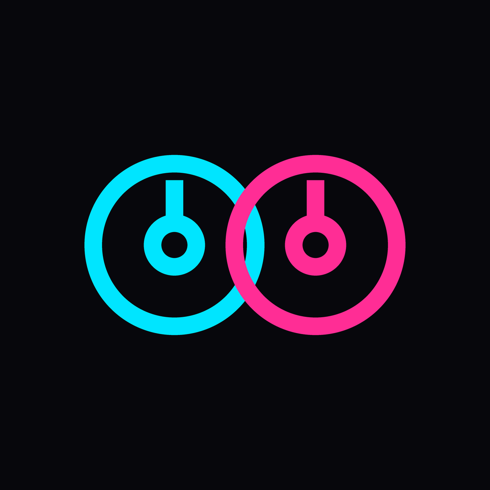

A DJ booth that teaches you to mix
Not a toy that mixes for you. Two decks, a real mixer, and a coach that tells you what to correct while you are mixing.
Real sound, not a mockup. The EQ, filter, echo, cut and crossfader are genuine audio processing. Cut the lows and the bass actually goes away.
What you learn
- Beatmatch by ear. The meter separates tempo from phase, so you learn what each hand does: the pitch matches the speed, the jog wheel places the beat.
- Phrasing. An 8-bar counter and a live section label, so you stop starting mixes in the wrong place.
- Reading a waveform — where the drop is, where the break ends.
How it works offline
The included tracks are not audio files: they are scores synthesised live by the audio engine. That is why the app makes sound with no network at all, and why six tracks weigh next to nothing. The only audio file shipped with the app is a short demo loop, so My samples is not empty on the first launch. You can also import your own audio through the system file picker — those files are copied into the app's own folder and never leave the device.
Privacy, in one line
No accounts, no analytics, no ads, no tracking and no network requests. Your samples, saved mixes and language choice stay in local storage on your device. The app never records from the microphone — it does not even ask for the permission.
Una cabina que te enseña a mezclar
No un juguete que mezcla por ti. Dos platos, una mesa de verdad, y un entrenador que te dice qué corregir mientras mezclas.
Suena de verdad, no es una maqueta. El ecualizador, el filtro, el eco, el corte y el crossfader son procesado de audio real. Si cortas los graves, el bajo desaparece de verdad.
Qué aprendes
- Cuadrar de oído. El medidor separa el tempo de la fase, así aprendes qué hace cada mano: el pitch iguala la velocidad, el jog coloca el golpe.
- Frasear. Un contador de 8 compases y la sección en vivo, para que dejes de empezar las mezclas donde no toca.
- Leer la onda — dónde entra el drop, dónde acaba el break.
Cómo funciona sin conexión
Los temas incluidos no son ficheros de audio: son partituras que el motor sintetiza en vivo. Por eso la app suena sin red y sin media empaquetada. También puedes importar tu propio audio con el selector del sistema — esos ficheros se copian a la carpeta de la app y no salen del dispositivo.
Privacidad, en una línea
Sin cuentas, sin analítica, sin publicidad, sin rastreo y sin peticiones de red. Tus samples, tus mezclas guardadas y el idioma se quedan en el almacenamiento local de tu dispositivo. La app nunca graba del micrófono — ni siquiera pide el permiso.